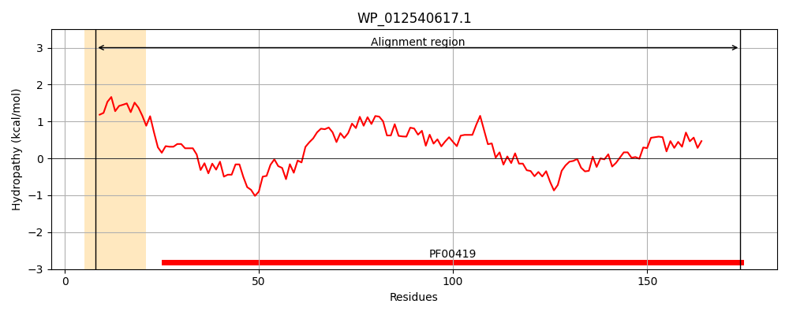
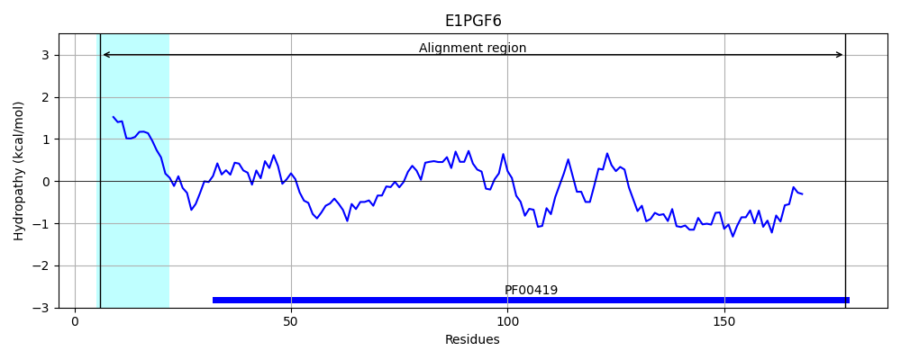
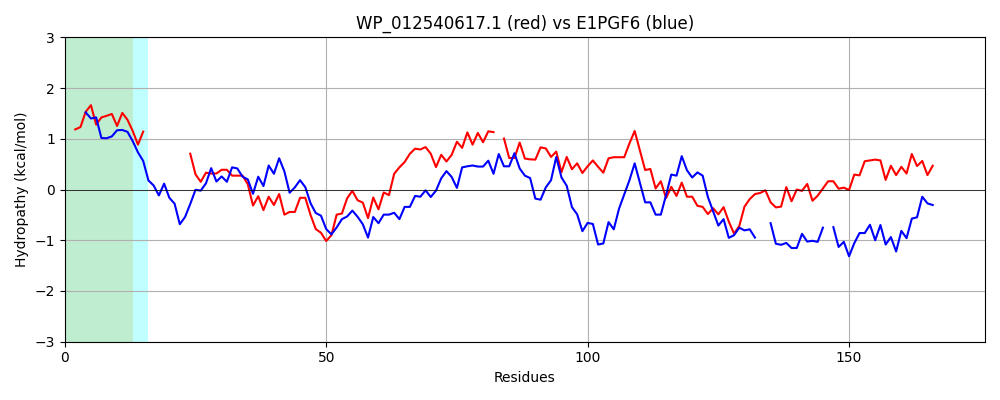

Hit Accession: E1PGF6
Hit TCID: 1.C.80.1.2
Hit Description: gnl|BL_ORD_ID|3594 gnl|TC-DB|E1PGF6|1.C.80.1.2 Minor F1C fimbrial subunit SfaD OS=Escherichia coli OR:K5:H- (strain ABU 83972) GN=sfaD PE=4 SV=1
Mach Len: 176
e:0.000000
Query TMS Count : 1
Hit TMS Count: 1
TMS-Overlap Score: 0.750000
Predicted Substrates:CHEBI:24870;ion, CHEBI:25367;molecule
BLAST Alignment:
Score: 170 , Bit scores: 70 bits, E-value: 1.5e-15, Alignment length: 176, Percentage identity: 28
Query: 8 LGALLTLVTPFAFAAD--------STITISGYVRDNACAVAGESKDFTVDFQDNAAKQFYAVGATTPPVPFRIVLSPCGTSVT-AVKVGFTGVADSVNTSLLKLDAGASAAAGMGVEILDQQQSRLPVNAPSSAMSWTTLTPGQTNILNFYARLMATQVPVTAGHVNATATFTLEF 174
+ +L L++P A A + + G + AC++A + TVD ++ +F+A G V F I L C T V+ V + F GV+D LL +D A+ G+ + + ++ + +N P +W LT G L+ AR AT PVT G N F+L +
Sbjct: 6 MAIMLFLLSPAALAGNHWHVMLPGGNMRFQGKIIAEACSLALSDRQMTVDMGQLSSNRFHAAGEYGDSVGFDIHLQGCSTVVSQRVGISFYGVSDIHEPELLSVDEENDASDGIAIALFNESGELVKLNQPPE--NWVHLTRGDMK-LHMQARYKATHYPVTGGKANGQVWFSLTY 178 | Protein Hydropathy Plots: |
|---|
|  |  |
Pairwise Alignment-Hydropathy Plot:
|
|---|
|  |